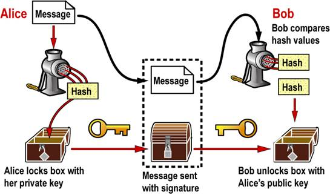
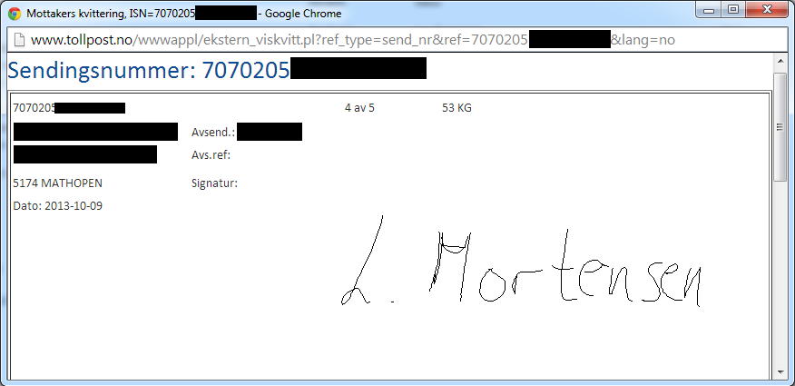

Digitale signaturer
Gruppepresentasjon INF143
Torsdag 28 november 2013
Krister, John-Petter, Trond, og Kristian
Oversikt
-
Del 1, Innledning , Krister
-
Del 2, Trusselen mot RSA , John-Petter
-
Del 3, Fordeler og ulemper, Trond
-
Del 4, Signaturer idag, Kristian
-
Referanseliste
Del 1, Innledning
Krister
Digital Signatur - Hva er det?
-
Defineres av American Bar Association som:
“A transformation of a message using an asymmetric cryptosystem and a hash function such that a person having the initial message and the signer’s public key can accurately determine (1) whether the transformation was created using the private key that corresponds to the signer’s public key, and (2) whether the initial message has been altered since the transformation was made.”
-
Endring av en melding slik at mottaker kan:
- avgjøre om avsender er den han utgir seg for å være.
- vite om meldingens innhold er endret etter signering.
- være sikker på at avsender har sendt meldingen (non-repudation).
-
Ifølge regjeringen i Norge, er begrepet digital signatur vanligvis kun benyttet når man snakker om en elektronisk signatur basert på PKI.
Forholdet mellom elektroniske og digitale signaturer
-
“Elektronisk signatur er en generell betegnelse på teknikker som kan benyttes til å “signere” digital informasjon på tilsvarende måte som en håndskrevet signatur.” – Post- og teletilsynet.
-
Digital signatur = en form for elektronisk signatur
-
Andre elektroniske signaturer:
- Fingeravtrykk
- Iris skanner
- Håndskreven signatur på "touch-flate" m.m
Hvordan fungerer digitale signaturer?
-
En illustrasjon:

-
Hvis det skal være en "your eyes only"
melding, krypterer Alice selve
meldingen med Bob sin public key.
Digital vs Håndskrevne signaturer: Risiko
-
Non-repudation - uavviselighet
- Håndskreven signatur kan forfalskes med riktig utstyr
- Digital signatur er til en viss grad uavviselig i Norge (Mer om hvorfor senere).
-
Kunnskap
- Alle kan gjenkjenne en håndskreven signatur.
- Digitale sertifikater er vanskeligere å forstå.
-
Tap av signert dokument
- Fysiske dokumenter med håndskreven signatur må fysisk destrueres
- Digitalt dokument kan slettes ved en feil, data kan bli korrupt (Privat sektor).
-
Løsninger der håndskrevne signaturer møter elektroniske signaturer øker risiko
- Posten benytter et slikt system.
- Signaturer legges ut på internettet.
Et eksempel fra Tollpost

-
Her er signatur kun beskyttet av et sendingsnummer?
-
Er dette ok??!
Del 2, Trusselen mot RSA
John-Petter
Busted!?
-
19 Sep 2013: RSA Security råder kunder til å bytte fra sin default PsaudoRandom Number Generator
-
Dette på bakgrunn av Mr. Snowdens lekkasjer, som bl.a. antyder at NSA har fått inn en backdoor i algoritmen
-
Big deal?
RSA algoritmen, fast forward
n = p * q
φ(n) = φ(p-1) * φ(q-1)
1 < e < φ(n)
d = (2(φ(n))+1) / e)
m^e mod n = c
c^d mod n = m
Matten er solid, men
-
p og q er avhengig av stor/god entropi
-
Deler to "n" enten p eller q, kan man raskt vha GCD finne det delte primtallet
-
Dette vil videre føre til at den private nøkelen kan beregnes!
-
==> En bevisst svakhet i PRNG vil svekke sikkerheten til RSA!!
14.Feb '12
-
PGP style public keys: OK
-
1024 bit Web sertifikat: 0.2% og 0.4% med svakhet
-
2048-bit Web sertifikater: 20 av 3.2*10^6 hadde svakhet
-
Aug 2012: 1/4 av sjekkede web sertifikater brukte 2048
Følger
-
Microsoft krever 4069 bit av alle nye Root certificates (fra 11.Nov 2013)
-
"RSA 1024 may be blocked from operation in Windows without notice in the near future."
-
De er ikke alene om å heve kravene til nøkellengden
Konklusjon
-
Trusselen er reell
-
Sikre høy entropi under valg av p og q
-
Høyne krav til nøkkel lengde
-
Skanne web sertifikater etter "svake" sertifikater, og varsle
Trusselen mot RSA ferdig...
Del 3, Eksempler, fordeler og svakheter
Trond
Hvorfor bruker vi digitale signaturer?
Eksempler
-
Statsbudsjett og lover (USA)
-
Vitnemål (Penn State, University of Chicago, and Stanford)
-
Kontrakter
-
Kvitteringer (Nike)
Fordeler med digitale signaturer
-
Autentiserer
-
Garanterer riktig avsender
-
Integritet
-
Garanterer at dokumentet ikke er endret
-
Ikke benekting (non-repudiation)
-
Det skal ikke være mulig å benekte signeringer i etterkant
-
Trusted third party (TTP)
-
Samler bevis fra begge parter, tidsstempler
Svakheter med digitale signaturer
-
Private nøkler
-
Certificate revocation list (CRL)
-
Krever uavhengig trusted party?
-
Trusted third party (TTP)
Hvorfor bruker vi det ikke mer enn det vi gjør idag?
Fordeler og ulemper ferdig...
Del 4, Signaturer idag
Kristian
Litt om e-signaturloven
-
Elektronisk signatur er et begrep som bl.a. er definert i esignaturloven, § 3 nr. 1.
-
Loven forvaltes av Nærings- og handelsdepartementet og er en gjennomføring av direktiv om elektroniske signaturer
-
"Lovforslaget er basert på prinsippet om teknologinøytralitet"
-
Rettsvirkningen av en elektronisk signatur etter § 6 skal være den samme som en håndskreven underskrift, verken mer eller mindre
-
Det betyr at det fortsatt vil være mulig å nekte en elektronisk signatur rettsvirkning på grunn av for eksempel tvang eller svik
To lange definisjoner fra lovverket
-
Den avanserte elektroniske signaturen er i esignaturloven § 3 definert som en elektronisk signatur som er entydig knyttet til undertegneren, kan identifisere undertegneren, er laget ved hjelp av midler som bare undertegneren har kontroll over, og er knyttet til andre elektroniske data på en slik måte at det kan oppdages om disse har blitt endret etter signering
-
Den kvalifiserte elektroniske signaturen er i esignaturloven § 3 definert som en avansert elektronisk signatur som er basert på et kvalifisert sertifikat og fremstilt av et godkjent sikkert signaturfremstillingssystem
-
Vi bruker den avanserte elektroniske signaturen, da det per i dag ikke foreligger noe behov for en kvalifisert elektronisk signatur
Litt om digitale signaturer
-
Digital signatur er den mest utbredte implementasjonen av elektronisk signaturer
-
Digital signatur bruker sertifikatbasert offentlig-nøkkel kryptografi understøttet av en PKI arkitektur
-
Digital signatur er det som i lov om elektronisk signatur kalles avansert elektronisk signatur
-
PT er i følge lov om elektronisk signatur (esignaturloven) tilsynsorgan for alle utstedere av kvalifiserte sertifikater og etter selvdeklarasjonsordningen
Fordeler med elektronisk signering
-
Signering kan gjøres uavhengig av tid og sted
-
Sparer tid på administrasjon og saksbehandling
-
Sparer penger på porto
-
Sparer miljøet ved å spare porto og postgang, eller om du måtte kjørt til banken for å signere
-
Bedrifter kan få bedre kontroll, id-rights sjekker om vedkommende faktisk kan signere på vegne av en bedrift
-
Automatiserte prosesser gjør at man heller kan bruke tiden på noe fornuftig
-
Letter arkivering av signerte dokumenter siden man slipper å scanne
-
... kom gjerne med innspill her ...
Norske produkter idag, NETS
-
Nets tilbyr TrustSign
-
TrustSign støtter elektroniske ID-løsninger som BankID (Norge), BankID (Sverige), Buypass smartkort (Norge), NemID POCES (Danmark)
-
TrustSign reklamerer for parallell signering, seriell signering eller en kombinasjon av parallell eller seriell
-
TrustSign kan sende meldinger til partene via e-post eller SMS
-
Signerte dokumenter kan arkiveres og enkelt gjenfinnes
Norske produkter idag, SIGNICAT
-
Signicat tilbyr eSignering (ID, IT, Documents og Archive)
-
eSignering støtter elektroniske ID-løsninger som BankID (Norge), BankID (Sverige), Commfides (Norge), NemID POCES (Danmark) med flere
-
eSignering tilbyr online signering, offline signering og arkivering
-
eSignering kan sende meldinger til partene via e-post eller SMS.
-
Signerte dokumenter kan arkiveres og enkelt gjenfinnes
Konklusjon
-
Elektronisk signering er tilgjengelig i Norge, og i bruk
-
Elektronisk signering er mest aktuelt for bedriftsmarkedet og det offentlige
-
Elektronisk signering er juridisk bindende
-
Elektronisk signering er regulert i lovverket
Signaturer idag ferdig...
Referanser
http://no.wikipedia.org/wiki/Elektronisk_signatur
http://www.npt.no/teknisk/elektronisk-signatur/elektronisk-signatur/elektroniske-signaturer
http://www.nets.eu/no-nb/produkter/sikkerhet/signering/Pages/default.aspx
http://www.signicat.no/elektronisk-id-e-id-eid/
http://software-engineer-tips-and-tricks.blogspot.no/2012/08/digital-signature-staff.html
http://searchsecurity.techtarget.com/definition/asymmetric-cryptography
http://www.regjeringen.no/nb/dep/fad/dok/lover-og-regler/retningslinjer/2008/rammeverk-for-autentisering-og-uavviseli/2.html?id=505876
Adams, Lloyd 2005. Understanding PKI, second Edition
... og atter referanser
http://blogs.adobe.com/insidepdf/files/2010/11/ALL_JimKing_100712wForms.pdf
http://boingboing.net/2012/02/16/prime-suspect-or-random-acts.html
http://www.yozons.com/digitalSignatures.jsp
http://perspectives-project.org/
https://freedom-to-tinker.com/blog/nadiah/new-research-theres-no-need-panic-over-factorable-keys-just-mind-your-ps-and-qs/
http://www.wired.com/threatlevel/2013/09/rsa-advisory-nsa-algorithm/